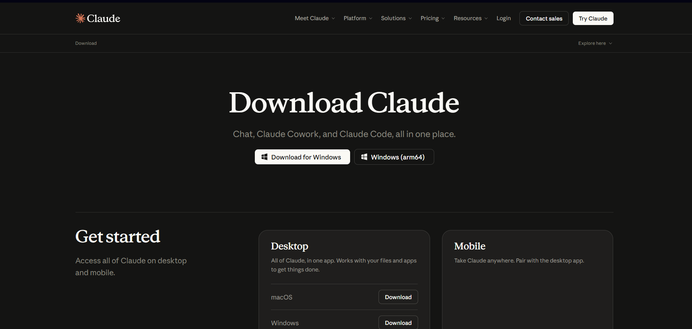
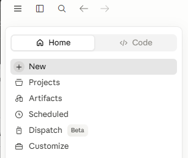

Обычный чат в браузере (claude.ai). Отвечает текстом. В твои файлы залезть не может.
Тот же Claude, но работает у тебя на компьютере, в твоей папке. Сам создаёт файлы, всё настраивает.
Открой claude.ai/download и нажми «Download for Windows» (для Mac — кнопка Download в разделе Desktop).

Открой скачанный файл и жми «Далее» до конца. Обычная установка, как у любой программы.
Открой приложение Claude → войди своим аккаунтом (тем, что регистрировал на claude.ai).
Всё! Приложение умеет работать с твоими файлами и папками — именно это нам и нужно.
В приложении вверху слева переключись с Home на Code — это и есть Claude Code, режим для работы с файлами.

Открой свою папку Контент-автопилот (кнопка выбора папки в приложении) и разреши доступ, когда спросит — нажми «Allow» / «Разрешить». Без этого Claude не сможет писать файлы.